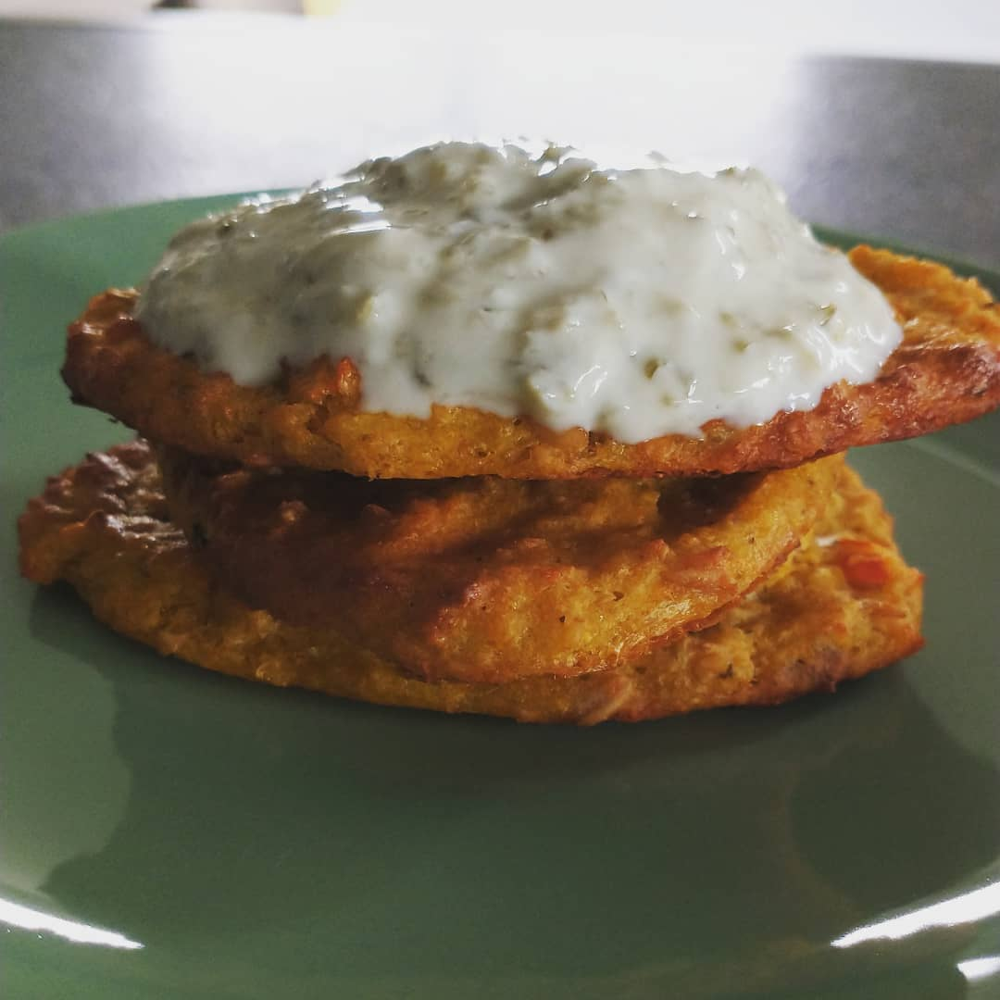

Zemiakové placky podľa @lea_r_k — Normy Jedál
Mali to byť klasické mastné zemiakové placky a sú z toho zdravé vynikajúce zemiakovo-mrkvové pečené placičky s jogurtovým dipom 😋
3zemiaky
2mrkvy
Ovsené vločky pomleté na múku podľa potreby
Soľ,korenie,majoránka
Chutilo malým aj veľkým
#healthfood #zdraverecepty #zdravejedlo #healthlifestyle #healthyfood #healthyrecipes #zdravejidlo #zdravejedlomusibyť #zdravejidloprodeti #zemiakoveplacky #ajzdravosada #dobruchut